Configuring Recipients Groups
The recipients added to the Persons directory can be added to pre-existing groups. You must create relevant groups for the intended recipients before creating the recipient records. This enables you to categorize the recipients depending on the organization, position, location and/or any other relevant factor.
To view and recipients groups, do the following:
- Click Configure.
- Select Recipients. By default, the Groups directory is displayed.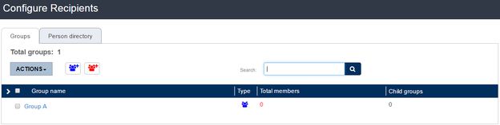
The Groups can be classified into two:
- Person Group: The group can contain Person as well as FIM records.
- Citizen Group: The group contains only citizen records.
Adding a Person Group
To create a person group, do the following:
- Click Add Person Group on the Groups page.
- At the Add Person Group page, enter the relevant information into the following fields:
- Name: Enter a name for the group.
- Parent Group: Drop down to add the group as a child group to an existing group.
- Organization Owner: The organization to which the group belongs.
Select “Visible for all child organizations” if you want this group to be visible to other child organizations of the parent.
- Click on Add Members to add person records to the group. The following window appears to the right of the page.
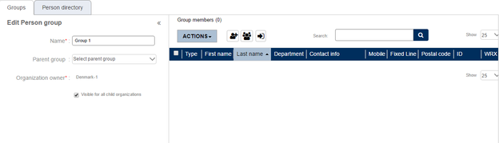 - Click 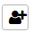to add a new person record. Click 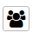to add a person record from the directory. Or click on 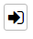to import records from contacts database. Alternatively, you can also search for the records in the search field provided. If you want to delete any added record, click Actions and select Delete.
- Click Save to save the group, or Cancel to cancel the operation.
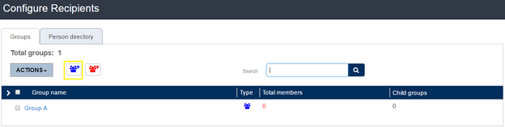
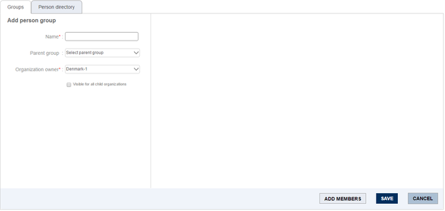
Only those records that contain at least one contact information, can be added to a group. The table below shows the fields displayed in the Persons Directory.
| Field | Description |
| Type | To show the type of record. In this case, the type is person. |
| First Name | The first name of the person. |
| Last Name | The last name of the person. |
| ID | The unique identifier to distinguish a person. |
| Department | The department to which the person belongs. |
| Contact Info | The list of contact information entered for the person record. The icons for each contact information will be show. If mobile, landline, fax numbers and email address are entered for a record, the icon for each will be shown under this option. |
| Mobile Number | The mobile number of the person. |
| Fixed Line Number | The fixed line number of the recipient. |
| Email Address | The email address entered for the person record. |
| Postal Code | The postal code of the person’s address. |
| WRX Code | The unique employee ID of the person. |
| State | Active or Inactive. |
The Groups Directory displays the following fields of the groups records:
- Actions: The button is provided with the option Delete. It is used in the process of deleting a group.
- Group Name: The name of the group.
- Type: Classified into Person Group and Citizen Group.
- Total Members: The total number of members in the group including the child groups.
- Child Groups: The number of child groups added to the group.
Adding a Citizen Group
To add a citizen group, do the following:
- Click Add Citizen Group icon on the Groups page.
- In the Add Citizen Group page, enter the relevant information into the following fields:
- Name: Enter a name for the group.
- Parent Group: Drop down to select one of the existing groups as the parent group.
- Organization Owner: The organization to which the group belongs.
Select “Visible for all child organizations” if you want this group to be visible to other child organizations of the parent.
- Click to add a new citizen record. Click to add a citizen record from the database. Alternatively, you can also search for citizen records in the search field provided. If you want to delete any added record, click Actions and select Delete.
- Click Save to save the group, or Cancel to cancel the operation.
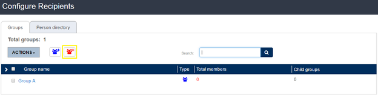
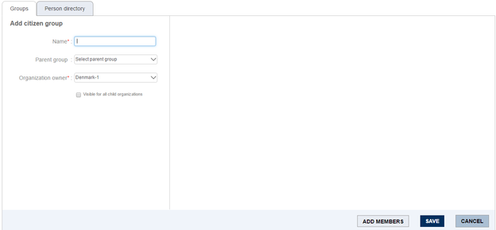
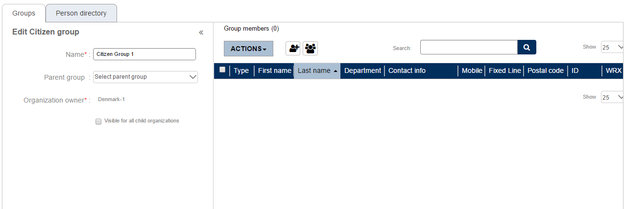
The list of Citizen Groups display the same fields as that of Person Groups in the Groups Directory list.
Deleting a Group
If you want to delete any of the existing groups, do the following:
- Place a checkmark in the box adjacent to the group you want to delete. If it is a parent group, the child groups added to it will be shown below. If you do not want the child group to be deleted, uncheck the child group.
- Go to Actions and select Delete.
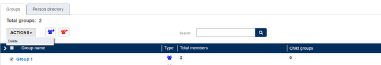